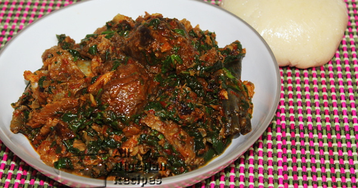

Efo Riro

Efo Riro
Description
Efo riro is one of the most popular vegetable soups in Nigeria and an absolute favourite of the Yorubas.
A major rule is:
using tomatoes for Efo Riro is an absolute No No! All you need to use are Bell peppers and Scotch bonnets. Definitely no tomatoes!
Also, to get the best out of Efo Riro, you need to use Palm Oil.
Efo Riro doesn’t need too much seasoning, curry, thyme or white pepper are unnecessary.
All it needs to thrive is very rich beef/chicken stock, this means you need to properly season your meats as the stock is what really determines the outcome.
I hardly add seasoning to it during the cooking process, I just rely on the stock….and my ever faithful Knorr Chicken Cubes.
If you’re using Spinach; which is very common, ensure you get rid of practically all the water in it before adding, failure to do this will produce limp and soggy Efo Riro.
Also, try to use as much assorted meats as you possibly can, the more the variety, the better. Another tip is to fry your meats lightly, this helps to firm up the meat and also improves the appearance and taste of your Efo Riro.
Ingredients
- Assorted meats of your choice (shaki, pomo, cow leg, smoked turkey or beef are ideal)
- Dried stockfish (Panla)
- Smoked cat fish
- 2 bunches Soko leaves ( you can also use Spinach or Tete)
- 3 medium /2 big size bell peppers (Tatashe)
- 11/2scotch bonnet (Rodo)
- 2 tablespoons ground crayfish
- 2 red onions
- 2 small stock cubes
- 2 tablespoons locust beans (iru)
- 1/2 cup Palm Oil
- Salt to taste
Steps
- If you are using the hard stock fish, soak it for a few hours. Soak the dry fish till soft and debone.
- Wash the leafy vegetsbles thoroughly and Cut into small pieces
- Deseed the tatashe and grind till coarse.
- Prepare other ingredients: pound/blitz the pepper, dice the onions and grind the crayfish.
- Start cooking the shaki first with as little water as possible (see video below) as it is the toughest meat in the bunch. This soup should have as little water as possible so add small amounts of water at a time and top it up as you cook.
- When the shaki starts to curl, add the dry fish and stockfish.
- When the shaki is almost done, add beef, stock cubes and some of the onions and cook till all the meat and fish are well done. Set these aside.
- In another pot, pour the palm oil and heat it up. Once hot, add the remaining onions.
- Fry the tatashe peppers till there's no more water in it. This should take about 15 minutes
-
- Add the locust beans, crayfish, and stir very well.
- Add the cooked meat and fish, stir very well.
- Add the vgetables, stir very well, cover and once it heats up again, add salt to taste and take the pot off the stove
Return to index page